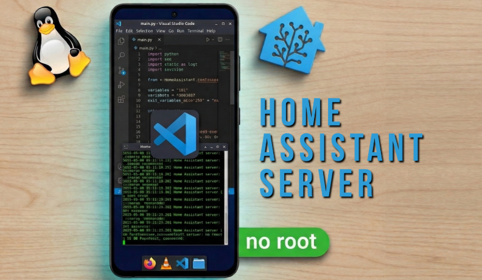
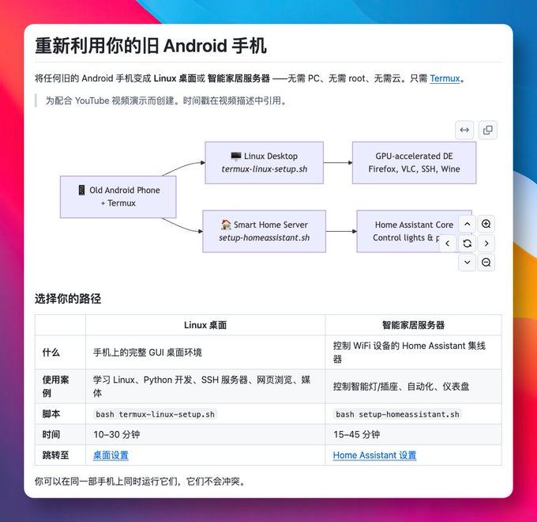
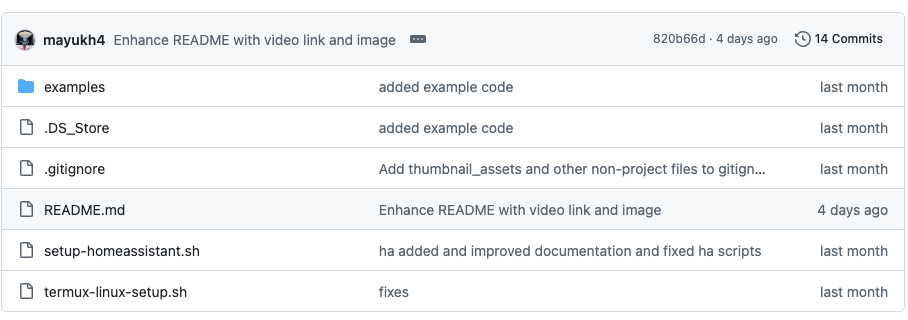

家里那种退役安卓机，最尴尬的不是坏了，是还能亮屏、还能充电、还能联网，就是没人再想用。
拿去卖不值钱，扔了又觉得可惜。
我最近刷到一个挺直接的开源项目，叫 linux-android。它干的事不复杂：把旧安卓手机直接改造成一台能用的 Linux 桌面电脑，或者顺手变成家里的智能家居小主机。

它不要求 root，这点很关键。
很多人一看到“旧手机跑 Linux”，第一反应就是要解锁、刷机、折腾半天。这个项目没走那条路。手机里装个 Termux，跑一段脚本，十几分钟左右，就能把完整的 Linux 桌面环境装起来。
而且不是那种只给你一个命令行黑框。
它把桌面都配好了。机器老一点，可以上轻量的 LXQt；性能还行的，直接装 KDE Plasma 也能玩。项目一共给了四种桌面环境可选，基本把“低配能跑、高配能看”这件事考虑到了。

装完之后也不是摆设。
浏览器、播放器、Python 开发环境这些常用东西都带着，拿来学 Linux、跑点脚本、做轻量开发，其实已经够用了。再加上它支持 SSH，你甚至不用一直戳手机屏幕，直接在电脑上远程连过去操作，体验会顺很多。
我觉得更实用的，其实是另一条路。
旧手机本身就是一台带屏幕、带网络、低功耗、能 24 小时插电的设备。拿它当 智能家居中枢 很合适。常插着充电器放在角落里，在局域网里用浏览器就能控制家里的智能灯、插座这类设备，至少比让它在抽屉里慢慢老化强。

这种项目吸引人的地方，不在“能不能跑”，而在“你真的会去试”。
门槛低，不用 root，不依赖云，装起来也快。手头刚好有闲置安卓机的话，拿来当 Linux 学习机，或者搭个家庭小服务器，折腾成本其实非常低。
GitHub地址：mayukh4/linux-android